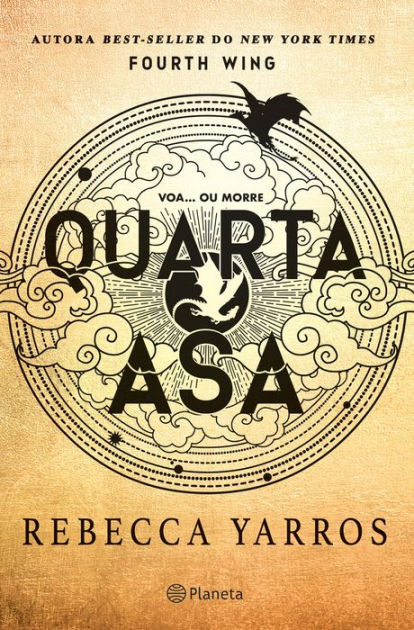
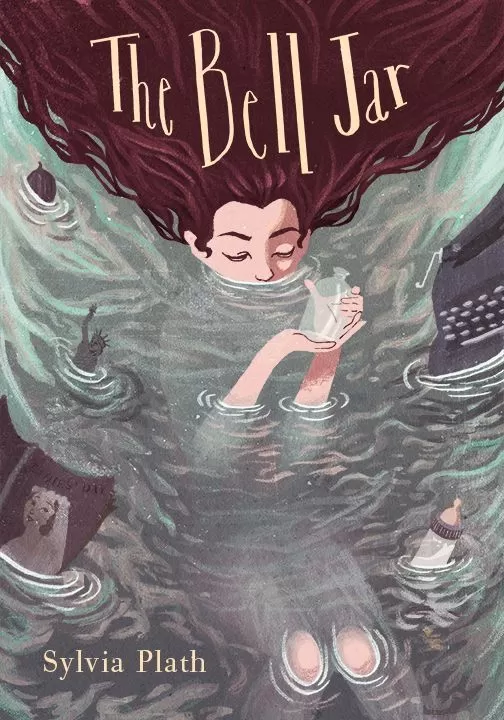
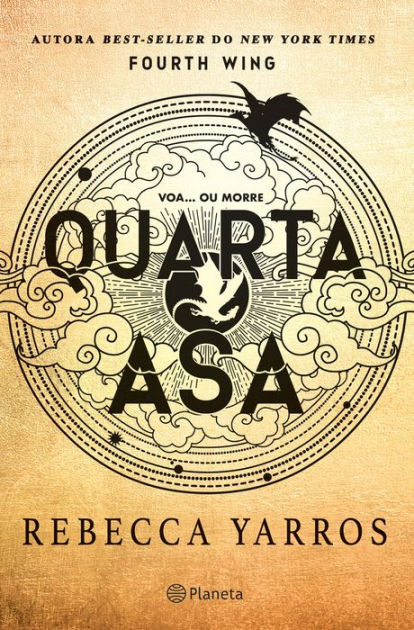
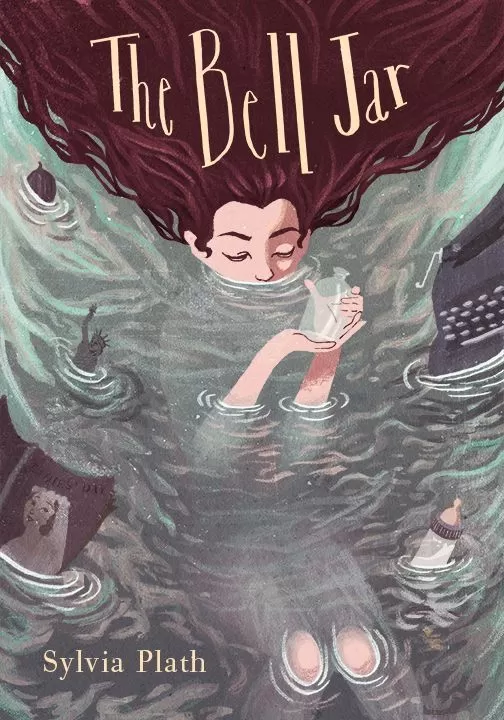

🖋️Como surgiu Livraria Universo das Palavras🎯
Em um cantinho acolhedor da cidade de Aurora do Sul, nasceu a Livraria Universo das Palavra,
um verdadeiro paraíso para os amantes da leitura. Fundada em 2012 por uma professora aposentada
apaixonada por literatura, a livraria cresceu e se tornou uma super marca reconhecida em todo o Brasil
por
sua variedade, atendimento de qualidade e o compromisso com a cultura.
Com o lema:
"Se existe, está aqui!",
a Universo das Palavras possui todos os tipos de livros – dos romances clássicos aos manuais técnicos,
mangás, biografias raras, livros infantis interativos, enciclopédias e até manuscritos independentes de
novos
autores brasileiros. Se não tiver, eles encomendam!
Hoje, a livraria conta com uma equipe de 12 vendedores apaixonados por livros, prontos para ajudar
qualquer leitor a encontrar o título perfeito ou a descobrir novas paixões literárias. O atendimento é feito
com dedicação tanto na loja física quanto pelo WhatsApp, oferecendo praticidade e um toque de carinho
em cada recomendação.
 


